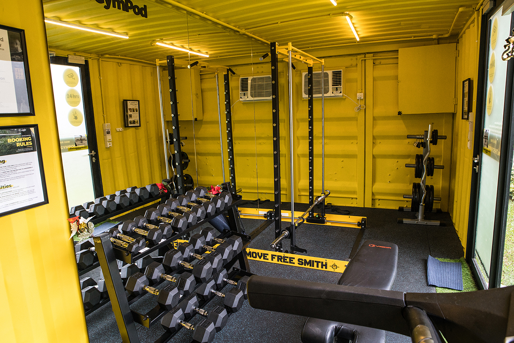
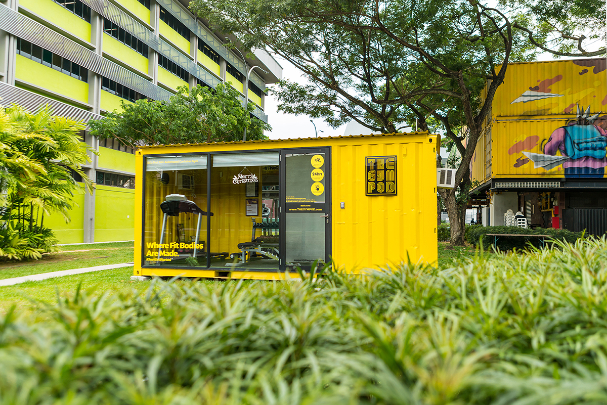
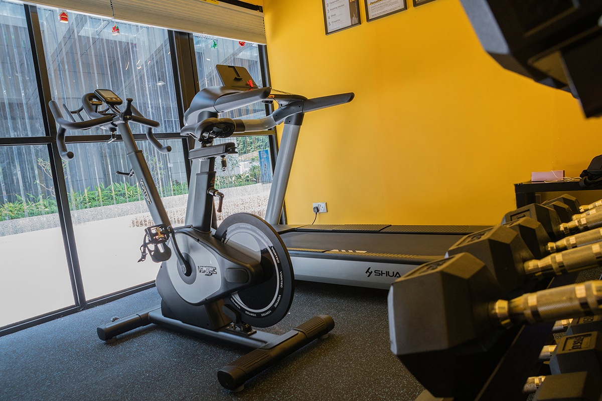

The Gym Pods are repurposed shipping containers
– with glass windows, doors, air conditioning & lights
– that are furnished with modern gym equipment.
Our customers, who we affectionally call Gym Podders,
are able to book pods, open the doors, and access different services
– all through a simple smartphone application.



3 REASONS TO USE
THE GYM POD
#1. PRIVACY
The Gym Pod was designed for everyone.
Whether you’re looking to #JustGetStarted
on a fitness journey, or you’re a fitness
enthusiast looking for complete peace during a workout,
you’ll be completely satisfied in our Gym Pods!
#2. CONVENIENCE
Our mission is to make fitness accessible for everyone.
That’s why we deploy our pods in areas where traditional
gyms would not – in between office buildings, national parks,
and in the near future, residential blocks.
Gym Pods are operational for 24 hours a day.
You can come by for a workout anytime, any day.